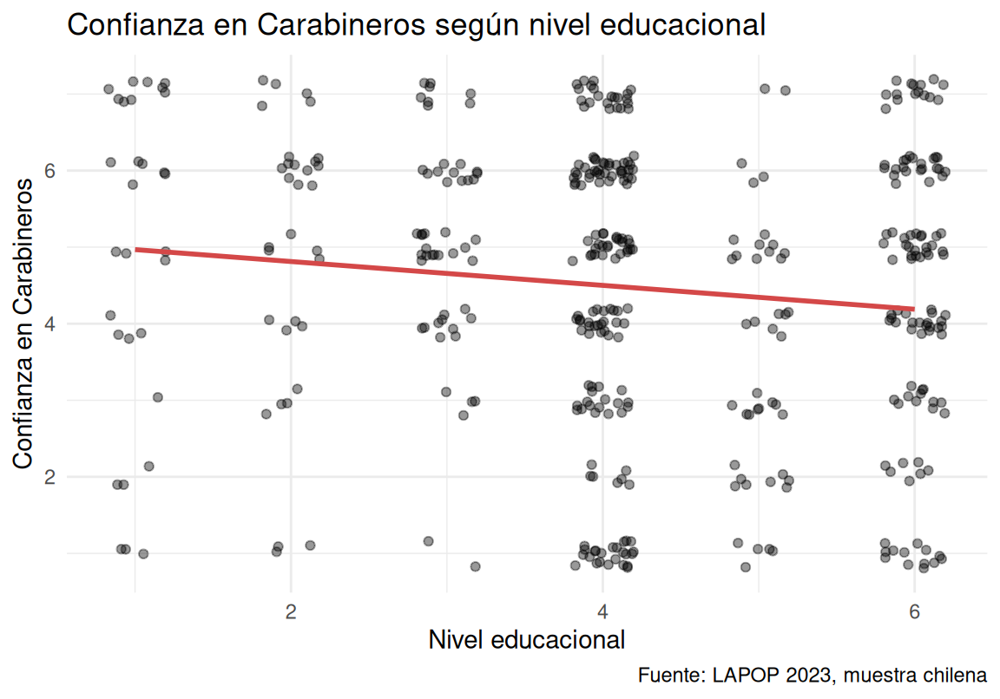

url_lapop <- "https://github.com/cursos-metodos-facso/datos-ejemplos/raw/main/subset_lapop2023.rdata"
load(url(url_lapop))
lapop_chile <- datos_lapop |>
dplyr::filter(pais_name=="Chile")1. Correlaciones
A usted le piden escribir un informe que evalúe la relación entre la confianza en Carabineros y el nivel educacional de las personas. Para ello, le piden analizar la muestra chilena de la Encuesta LAPOP 2023, que contiene las siguientes variables:
| Variable | Qué representa | Escala |
|---|---|---|
pais_name |
País | Texto |
conf_ffaa |
Confianza en las Fuerzas Armadas | 1 = nada … 7 = mucho |
conf_policia |
Confianza en la policía (en Chile, Carabineros) | 1 = nada … 7 = mucho |
apoyo_dem |
“La democracia puede tener problemas, pero es mejor que cualquier otra forma de gobierno” | 1 = muy en desacuerdo … 7 = muy de acuerdo |
satisf_dem |
Satisfacción con el funcionamiento de la democracia en el país | 1 = muy insatisfecho … 4 = muy satisfecho |
educ |
Nivel educacional | 0 = ninguna … 6 = superior completa |
riqueza |
Quintil de riqueza del hogar (índice de bienes del hogar) | 1 = quintil más bajo … 5 = quintil más alto |
mujer |
Género | 0 = hombre, 1 = mujer |
Cargue y procese la base en R:
¿Cómo trabajar? Resuelva cada apartado en R y escriba sus respuestas bajo la pregunta correspondiente. Al terminar, seleccione «Comprobar mis respuestas» para revisar sus resultados y compararlos con los modelos.
1.1. Diagrama de dispersión
Genere un diagrama de dispersión (nube de puntos/scatterplot/jitterplot) entre la confianza en Carabineros y el nivel educacional, y descríbalo.
Gráfico y descripción modelo
library(ggplot2)
ggplot(lapop_chile, aes(x = educ, y = conf_policia)) +
geom_jitter(width = 0.2, height = 0.2, alpha = 0.4) +
geom_smooth(method = "lm", se = FALSE, color = "#d44848") +
labs(x = "Nivel educacional",
y = "Confianza en Carabineros",
title = "Confianza en Carabineros según nivel educacional",
caption = "Fuente: LAPOP 2023, muestra chilena") +
theme_minimal()`geom_smooth()` using formula = 'y ~ x'Warning: Removed 2 rows containing non-finite outside the scale range
(`stat_smooth()`).Warning: Removed 2 rows containing missing values or values outside the scale range
(`geom_point()`).
Como ambas variables tienen pocas categorías, se usa jitter para que los puntos no queden superpuestos. Los casos se reparten por casi toda la grilla, sin un patrón marcado, y se concentran en los niveles educacionales 4 y 6. La línea de tendencia muestra una pendiente levemente negativa: quienes tienen mayor nivel educacional tienden a declarar algo menos de confianza en Carabineros (la confianza promedio va de 4,90 en el nivel 1 a 4,42 en el nivel 6). La dispersión es alta, por lo que se anticipa una asociación débil.
Su código puede ser distinto y también estar correcto si produce un gráfico equivalente.
1.2. Estimación del coeficiente
Estime la correlación entre la confianza en Carabineros y el nivel educacional. Justifique la elección del coeficiente utilizado.
Código y justificación modelo
# Correlación de Spearman
cor.test(lapop_chile$conf_policia, lapop_chile$educ,
method = "spearman")
Spearman's rank correlation rho
data: lapop_chile$conf_policia and lapop_chile$educ
S = 15498479, p-value = 0.004091
alternative hypothesis: true rho is not equal to 0
sample estimates:
rho
-0.1375577 # Casos válidos para el par
sum(complete.cases(lapop_chile$conf_policia, lapop_chile$educ))[1] 434Se utiliza el coeficiente de Spearman, porque ambas variables son ordinales: la confianza va de 1 a 7 y el nivel educacional de 0 a 6. Pearson exige variables al menos de intervalo, lo que no se cumple aquí. Spearman trabaja con los rangos de los casos, por lo que es adecuado para variables ordinales. El resultado es ρ = -0,138, con n = 434 casos válidos.
R advierte que no puede calcular un valor p exacto porque hay empates. Es esperable con variables ordinales y no invalida el resultado.
1.3. Interpretación
Interprete el resultado del coeficiente, considerando la visualización, la magnitud y el sentido del efecto, y la inferencia estadística (\(\alpha=.05\)).
Resultados e interpretación modelo
n = 434 · ρ = -0,138 · p = 0.004
La correlación entre la confianza en Carabineros y el nivel educacional es negativo, de magnitud pequeña (ρ = -0,138) y estadísticamente significativa (p = 0.004). Con un 99 % de confianza, existe evidencia para rechazar la hipótesis nula de que no hay asociación entre ambas variables. Esto coincide con el diagrama de dispersión, que muestra una leve pendiente negativa con mucha dispersión. Sustantivamente, las personas con mayor nivel educacional tienden a declarar menor confianza en Carabineros, aunque la relación es débil: el nivel educacional se asocia solo con una pequeña parte de las diferencias en confianza. Estos resultados describen una asociación, no una relación causal.
Para comparar: revise si su respuesta distingue la significación estadística de la magnitud, interpreta el sentido en términos de las variables y evita establecer causalidad.
Cuando termine, compruebe los resultados de R. Se aceptan coma o punto decimal y redondeos razonables, sin separadores de miles. El código, el gráfico y las interpretaciones escritas se comparan con modelos, pero no se califican automáticamente.